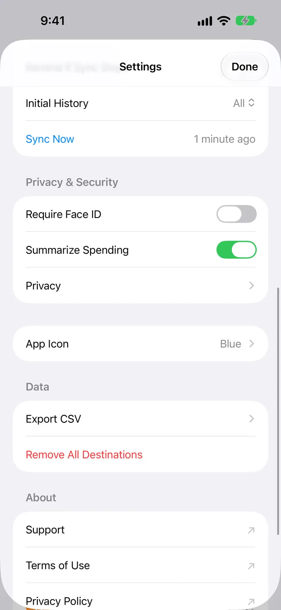
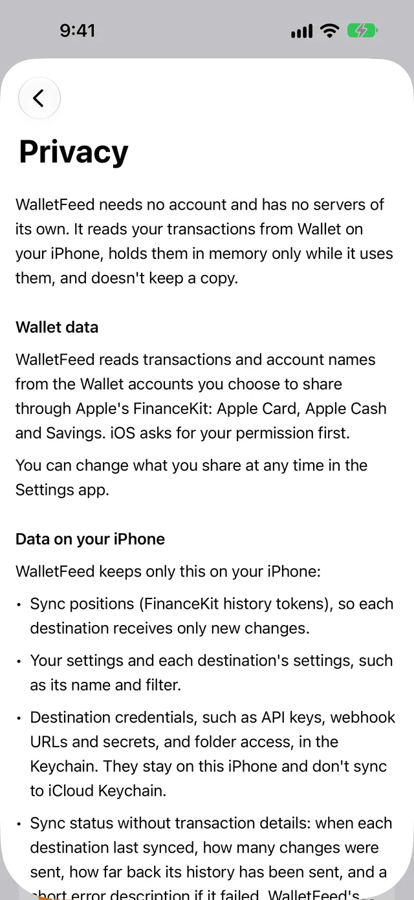

Privacy and security
WalletFeed has no account and no WalletFeed servers. It reads your Apple Card, Apple Cash and Savings transactions from Wallet on your iPhone. It sends them directly from your iPhone to the destinations that you add. For the full text, refer to the WalletFeed privacy policy.
Data that WalletFeed keeps
WalletFeed keeps your transactions in memory only while it uses them. It does not save a copy of them.
WalletFeed keeps some settings and status data:
- Your settings and the settings of each destination stay on your iPhone. These include the name and the filter of each destination.
- The keys, webhook addresses and sign-ins of your destinations stay in the Keychain on your iPhone. iOS encrypts the Keychain. These items do not go to iCloud Keychain or to your other devices.
- No person at WalletFeed can see or get your keys. Your iPhone sends each key only to its service.
- The status of each destination contains no transaction data. For example, the status gives the Last Sync time and the number of changes that WalletFeed sent.
- WalletFeed keeps two totals for the Spending widget, one for this month and one for the same days of last month. The widget shows these totals, and iOS keeps a copy of them.
Data that WalletFeed sends
WalletFeed sends your transactions only to the destinations and apps that you select:
- A service that you connect (for example, Lunch Money or Notion) receives the transactions directly from your iPhone through HTTPS.
- A Files destination saves the transactions in a folder that you select (for example, a folder in iCloud Drive).
- A CSV file from Export CSV goes only to the app that you select in the iOS menu.
- When a shortcut or Siri uses Get Recent Card Transactions, WalletFeed gives your transactions to that shortcut or to Siri.
If you tell Siri to show Spending or to do a search in WalletFeed, Siri opens WalletFeed. Siri receives none of your transactions.
Before a new destination receives transactions, WalletFeed shows a message, for example "Send Transactions to Lunch Money?". The message tells you which data the destination will receive, from which accounts and from which date. For a service, the message also tells you "It keeps what it receives." WalletFeed does not send data until you tap Send. For a Files destination, the button is Save. If you tap Cancel, WalletFeed removes the destination.
After a service receives your data, the terms and the privacy policy of that service are applicable to the data. If you delete a destination, WalletFeed does not send more data to it. But WalletFeed cannot delete the data that the destination received.
Apple Intelligence
If Apple Intelligence is available on your iPhone, WalletFeed uses it for these features:
- The Monthly Summary and the summary of each result in Ask Spending
- Your searches, the text that you type in Ask Spending, and the rules that you write for a destination filter
- The names of your recurring charges.
Apple Intelligence operates on your iPhone. For these features, WalletFeed does not send data to a server. To read your text, Apple Intelligence gets only the words that you type or speak. To give names to recurring charges, it gets only the merchant names.
WalletFeed calculates all the charts, totals and lists. Apple Intelligence can write an incorrect number in a summary. If a summary and the totals on the screen are different, the totals are correct.
WalletFeed does not keep the text that Apple Intelligence writes. It keeps only the filter that Apple Intelligence makes from a rule.
Stop the Apple Intelligence summaries
Settings shows Summarize Spending only if Apple Intelligence is available on your iPhone. If it is not available, WalletFeed does not write these summaries.
-
On your iPhone, open WalletFeed.
-
Tap Settings (the gear button) at the top of the screen.
-
In the Privacy & Security section, set Summarize Spending to off.

-
Tap Done.
After you set Summarize Spending to off, Apple Intelligence does not write the Monthly Summary or the summary of each result in Ask Spending. But Apple Intelligence continues to read the text that you send in Ask Spending.
Lock WalletFeed with Face ID
You can lock WalletFeed with Face ID, Touch ID or your passcode. The label in Settings changes with the type of iPhone:
- On an iPhone with Face ID, the label is Require Face ID.
- On an iPhone with Touch ID, the label is Require Touch ID.
- On an iPhone without Face ID or Touch ID, the label is Require Passcode.
-
On your iPhone, open WalletFeed.
-
Tap Settings (the gear button) at the top of the screen.
-
In the Privacy & Security section, set Require Face ID (or Require Touch ID or Require Passcode) to on.
-
Use Face ID, Touch ID or your passcode.
If Face ID does not identify you, Require Face ID stays off.
-
Tap Done.
WalletFeed locks each time that you close it or go to a different app. When you open WalletFeed again, it starts Face ID one time.
If Face ID does not identify you, tap Unlock to try again.
If you set Require Face ID to off, WalletFeed does not lock.
Screen protection
In these conditions, your iPhone does not show your transactions or amounts:
- When WalletFeed is not the active app, it puts a cover on its screen. Thus, the app switcher does not show your transactions.
- While you record the screen of your iPhone, or show it on a different screen, WalletFeed does not show your transactions or amounts.
- While your iPhone is locked, iOS can show the Spending widget without its amounts.
Notifications
If you set Recurring Charge Alerts to on in Settings, WalletFeed finds new and changed recurring charges on your iPhone. Then WalletFeed shows a notification with the name and the amounts of the charge. Notification Center keeps the notification until you clear it.
A Remind If Sync Stops notification contains no transaction data.
Analytics and purchases
WalletFeed has no analytics, advertisements or third-party SDKs (code from other companies). It does not monitor you in different apps or on websites.
If you let Apple give analytics data to app developers (in the Settings app), Apple can give crash reports to the developer of WalletFeed.
Apple processes the purchases of WalletFeed Pro. WalletFeed does not receive your payment information.
Delete a destination
When you delete a destination, WalletFeed erases its settings, its key and its status from your iPhone.
-
On your iPhone, open WalletFeed.
-
Tap Destinations at the bottom of the screen.
-
Tap the destination.
-
Tap Delete.

-
In the message, tap Delete again.
The message tells you "Transactions already sent stay at the destination." WalletFeed cannot delete these transactions.
Remove all destinations
Settings shows Remove All Destinations only if you have a destination.
-
On your iPhone, open WalletFeed.
-
Tap Settings (the gear button) at the top of the screen.
-
In the Data section, tap Remove All Destinations.

-
In the message, tap Remove All.
WalletFeed erases the settings, the keys and the status of all your destinations from your iPhone. The transactions that WalletFeed sent stay at each destination.
Change the Wallet accounts that WalletFeed reads
To remove an account from WalletFeed, deselect it in the Settings app. Refer to Change the accounts that WalletFeed reads.
If WalletFeed cannot get access to Wallet, it erases the totals of the Spending widget the next time that it operates.
Data after you delete WalletFeed
When you delete WalletFeed, iOS removes the settings of WalletFeed and the status of your destinations. But the WalletFeed items in the Keychain can stay on your iPhone. If you install WalletFeed again, it erases these items when it opens for the first time.
Read the privacy statement in WalletFeed
-
On your iPhone, open WalletFeed.
-
Tap Settings (the gear button) at the top of the screen.
-
In the Privacy & Security section, tap Privacy.

In the About section of Settings, Privacy Policy opens the privacy policy on this website.
Related
Updated October 30, 2026